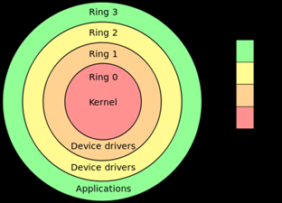
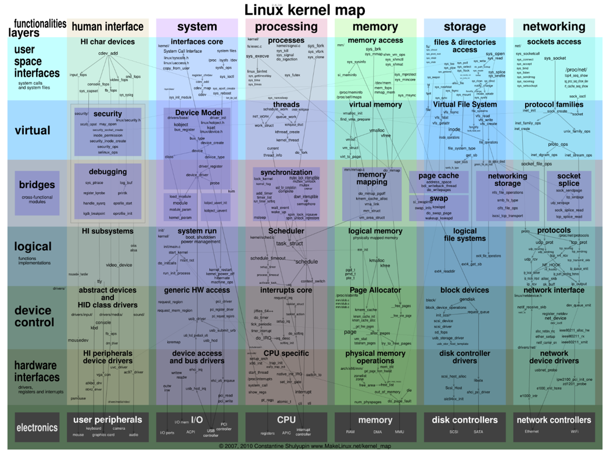
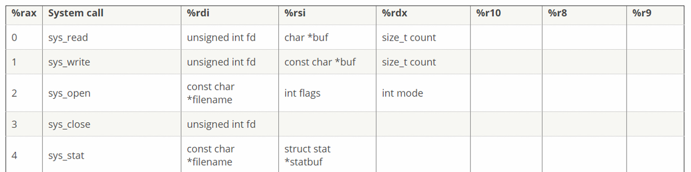
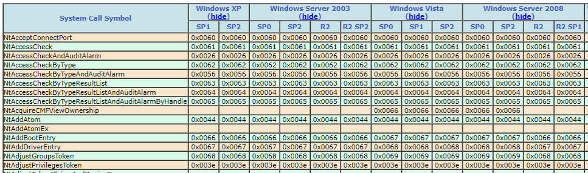

Operating Systems
Author: Paul DeCarlo (@pjdecarlo)
What is an Operating System
- Software that supports a computer's basic functions, such as scheduling tasks, executing applications, and controlling peripherals.
- Provides management of the computer hardware and resources (memory, cpu, hard disk) in a consistent way.
The first property gives us the ability to supervise multiple applications on a single computer system.
The second property ensures that we can run an operating system on a variety of computer systems with various different hardware configurations.
Computers can run software without an OS, but it would require programming every necessary aspect of the system to tell it exactly what to do and would probably end up with something that looks like an OS after a proper refactoring. See: TempleOS < 100,000 lines of code!
The Kernel
- The Core of the OS, i.e. the low-level portion of the OS that actually interfaces with hardware, memory, CPU, devices etc.
To know the kernel is to understand the essence of the OS. Imagine a hidden away API that is responsible for your computer being able to ultimately do anything at all with any and all of it’s devices and peripherals.
As such, it is typically secured away from the user by design both to satisfy fault tolerance and malicious use. This is accomplished via protection rings.

Dissection of the Linux Kernel

Dissection of the Windows Kernel
cache\ - cache manager
config\ - registry implementation
dbgk\ - user-mode debugger support
ex\ - executive functions (kernel heap, synchronization, time)
fsrtl\ - file system run-time support
io\ - I/O manager
ke\ - scheduler, CPU management, low-level synchronization
lpc\ - local procedure call implementation
mm\ - virtual memory manager
ob\ - kernel object manager
ps\ - process/thread support
se\ - security functions
wmi\ - Windows Management Instrumentation
inc\ - NTOS-only include files
rtl\ - kernel run-time support
init\ - kernel startup
Types of Kernels
So far, we have mentioned Linux and Windows Kernels. What are some differences between them?
- Linux employs a monolithic kernel A single program that contains all of the code necessary to perform every kernel related task with the ability to extend via modules (LMK’s). The mechanism allows for loading and reloading of modules into kernel space without need to reboot a running kernel.
- Windows /macOS employ a Hybrid or Modular kernel. In contrast to a microkernel, which runs certain portions of services in userspace instead of entirely in kernel space as is the case with monolithic kernels. Hybrid kernels are a combination of the two concepts with some services running in userspace (device drivers) and others in kernel space (network stack, filesystem).
Syscalls
- Provide an interface between a process and the operating system. They are typically available as assembly level instructions.
- Allow for userspace programs to interact with the kernel.


Translating native Linux Syscalls to equivalent Windows Syscalls is how the Windows Subsystem for Linux allows of execution of Linux targeted binaries in Windows 10.
Common Inspection Tools
Processes and Threads
- Processes (single or multi-threaded) run in separate memory spaces
- Threads (of the same process) run in shared memory space

Good examples of multi-threaded applications include anything that serves concurrent requests to multiple clients i.e. web and database servers
Methods for viewing running processes
- Windows
- Task Manager - (CTRL+SHFT+ESC)
- tasklist (cmd)
- Get-Process (PowerShell)
- Linux
Virtual Machines - Types
Full
- Parallels
- VMWare ESX
- VirtualBox
Hardware-Assisted
- VMWare Workstation
- Linux KVM
- Hyper-V
OS-Level
- Virtuozzo - Precursor to Docker
- Chroot Jails - Concept from BSD, restricts travel outside the chroot jail path
- Docker - Achieved using "containers": multiple isolated user-space instances which share resources provided by a common kernel
Technial Challenge
- Compile a Windows Based Kernel
- Make modifications to a Windows Based Syscall
- Load your modified kernel into a Windows Instance running in a virtualized environment and verify your changes at runtime
- Demonstrate translation of a Linux Syscall to a Windows Syscall (hint: some are pretty much 1 to 1)